9 Dealing with Messy Data III: Transformations
9.1 Transformations: The Family of Power and Roots
The GLM makes strong assumptions about the structure of data, assumptions which often fail to hold in practice.
One solution is to abandon the GLM for more complicated models (generalized linear models; weighted least squares; robust regression).
Another solution is to transform the data (either the \(X\)s or \(Y\)) so that they conform more closely to the assumptions.
A particularly useful group of transformations is the family of powers and roots:
\(X\) → \(X^p\)
- If p is negative, then the transformation is an inverse power: \(X^{-1} = \frac{1}{X}\), and \(X^{−2} = \frac{1}{X^2}\)
- If p is a fraction, then the transformation represents a root: \(X^{\frac{1}{2}} = \sqrt{X}\), and \(X^{-\frac{1}{2}} = \frac{1}{\sqrt{X}}\)
The Box-Cox family of transformations provides a comparable but more convenient form (in some cases*).
\(X\) → \(X^{(p)} \equiv \frac{X^p- 1}{p}\)
Since \(X^{(p)}\) is a linear function of \(X^p\), the 2 transformations have the same essential effect on the data.
- Dividing by p preserves the direction of \(X\), which otherwise would be reversed when p is negative.
- This function also matches level and slope of curve at \(X=1\).
- Dividing by p preserves the direction of \(X\), which otherwise would be reversed when p is negative.
The power transformation \(X^{(0)}\) is useless, but the very useful log transformation is a kind of zeroth power:
lim \(p\) → \(0\) \(\frac{X^p - 1}{p} = \text{log}_eX\)
where \(e \approx 2.718\) is the base of the natural logarithms. Thus, we will take \(X^{(0)} \equiv log(X)\).
It is generally more convenient to use logs to the base 10 or base 2, which are more easily interpreted than logs to the base e.
Changing bases is equivalent to multiplying your variable by a constant. No effect on significance tests.
Descending the ladder of powers and roots from \(p = 1\) (i.e., no transformation) towards \(p = -2\) compresses the large values of X and spreads out the small ones.
Ascending the ladder of powers from \(p = 1\) towards \(p = 3\) has the opposite effect.
Power transformations are sensible only when all of the values of \(X\) are positive:
Some of the transformations, such as log (\(p= 0\)) and square root (\(p= .5\)), are undefined for negative or zero values of \(X\).
Power transformations are not monotone (i.e., they change to order of scores) when there are both positive and negative values among the data.
We can add a positive constant (called a start) to each data value to make all of the values positive:
\(X\) → \((X + s)^{(p)}\)
Power transformations are effective only when the ratio of the biggest data values to the smallest ones is sufficiently large; if this ratio is close to 1, then power transformations are nearly linear. For example:
Power transformations will work well if range of \(X = 1 – 100\).
Power transformations will have little effect if range of \(X = 1000 – 1100\)
Using a negative start can often increase the ratio of highest/lowest score.
Using reasonable starts, if necessary, an adequate power transformation can usually be found in the range \(−2 \le p \le 3\).
Power transformations of \(Y\) (or sometimes \(X\)) can correct problems with normality of errors.
Power transformations of \(Y\) (or sometimes \(X\)) can stabilize the variance of the errors.
Power transformations of \(X\) (or sometimes \(Y\)) can make many nonlinear relationships more nearly linear.
You can experiment with Box-Cox transformations of \(X\) or \(Y\) in R using
bcPower()in thecarpackage.In many fields, \(X^p\) rather than \(X^{(p)}\) may be preferred. Particularly, if \(p \ge 0\). This is simply done algebraically.
9.2 Transformations: Dealing with Skew
Transforming \(Y\) down the ladder can correct positive skew in the errors (most common problem).
Transforming \(Y\) up the ladder corrects negative skew in the errors.
Code
set.seed(102030)
y <- tibble(y_raw = rchisq(n=500, df=1),
y_.5 = car::bcPower(y_raw, .5),
y_.25 = car::bcPower(y_raw, .25),
y_0 = car::bcPower(y_raw, 0))
plot_raw <- y |>
ggplot(aes(x = y_raw)) +
geom_density() +
scale_x_continuous(limits = c(-.5, 12), breaks = c(0, 2, 4, 6, 8, 10)) +
labs(title = "Raw Y",
x = NULL,
caption = str_c("N = 500; bandwidth = ", round(density(y$y_raw)$bw, 4)))
plot_.5 <- y |>
ggplot(aes(x = y_.5)) +
geom_density() +
scale_x_continuous(limits = c(-3, 5), breaks = c(-2, 0, 2, 4)) +
labs(title = "p = .5; sqrt(Y)",
x = NULL,
caption = str_c("N = 500; bandwidth = ", round(density(y$y_.5)$bw, 4)))
plot_.25 <- y |>
ggplot(aes(x = y_.25)) +
geom_density() +
scale_x_continuous(limits = c(-4.5, 4), breaks = c(-4, -2, 0, 2, 4)) +
labs(title = "p = .25",
x = NULL,
caption = str_c("N = 500; bandwidth = ", round(density(y$y_.25)$bw, 4)))
plot_0 <- y |>
ggplot(aes(x = y_0)) +
geom_density() +
scale_x_continuous(limits = c(-15, 4), breaks = c(-15, -10. -5, 0)) +
labs(title = "p = 0; log(Y)",
x = NULL,
caption = str_c("N = 500; bandwidth = ", round(density(y$y_0)$bw, 4)))
(plot_raw + plot_.5) / (plot_.25 + plot_0)
9.3 Transformations: Dealing with Heteroscedasticity
Transforming \(Y\) down the ladder can correct problems with increasing spread of errors as \(Y\) increases (most common problem).
Transforming \(Y\) up the ladder corrects decreasing spread.
The problems of unequal spread and skewness commonly occur together and can be corrected together. Therefore, transforming \(Y\) down the ladder can correct both issues simultaneously.
Code
options(conflicts.policy = "depends.ok")
library(tidyverse)
library(car, exclude = c("recode", "some")) # needed for model_assumptions
library(psych, exclude = c("logit", "%+%", "alpha")) # needed for model_assumptions
library(gvlma) # needed for model_assumptions
path_data <- "data_lecture"
data <- read_csv(here::here(path_data, "9_transformations_fps.csv"),
show_col_types = FALSE) |>
mutate(sex_c = if_else(sex == "female", -.5, .5)) |>
# remove outliers to fit same model as last two units
filter(!subid %in% c("0125", "2112"))
devtools::source_url("https://github.com/jjcurtin/lab_support/blob/main/model_assumptions.R?raw=true")Code
m <- lm(fps ~ bac + ta + sex_c, data = data)Code
model_assumptions(m, Type = "normal")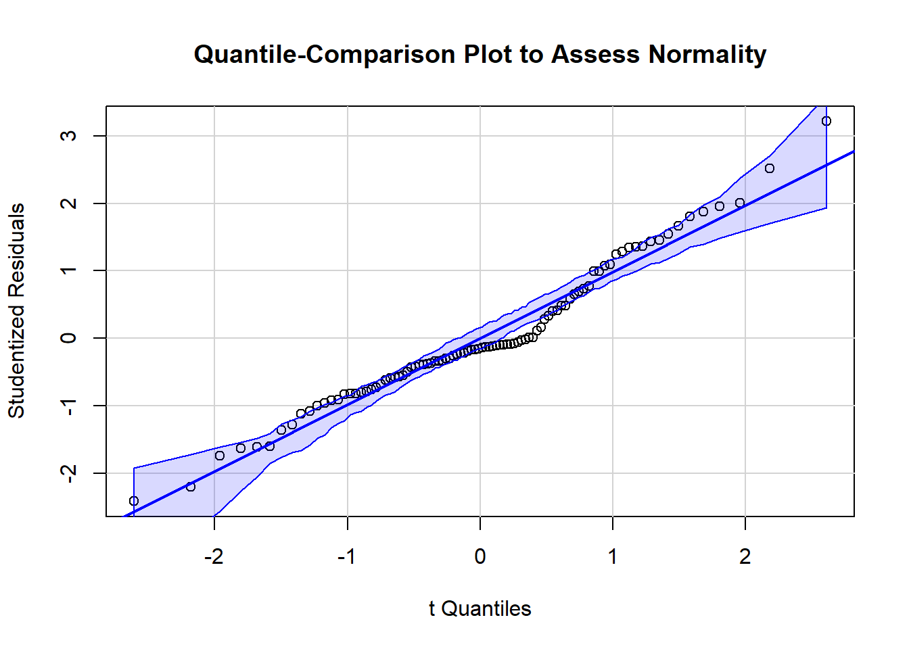
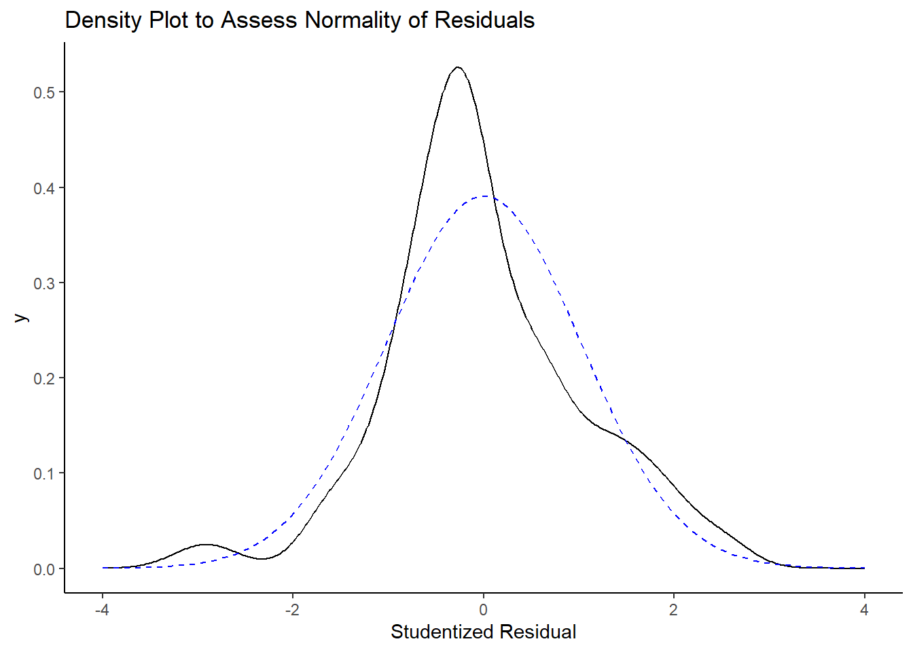
Code
model_assumptions(m, Type = "constant")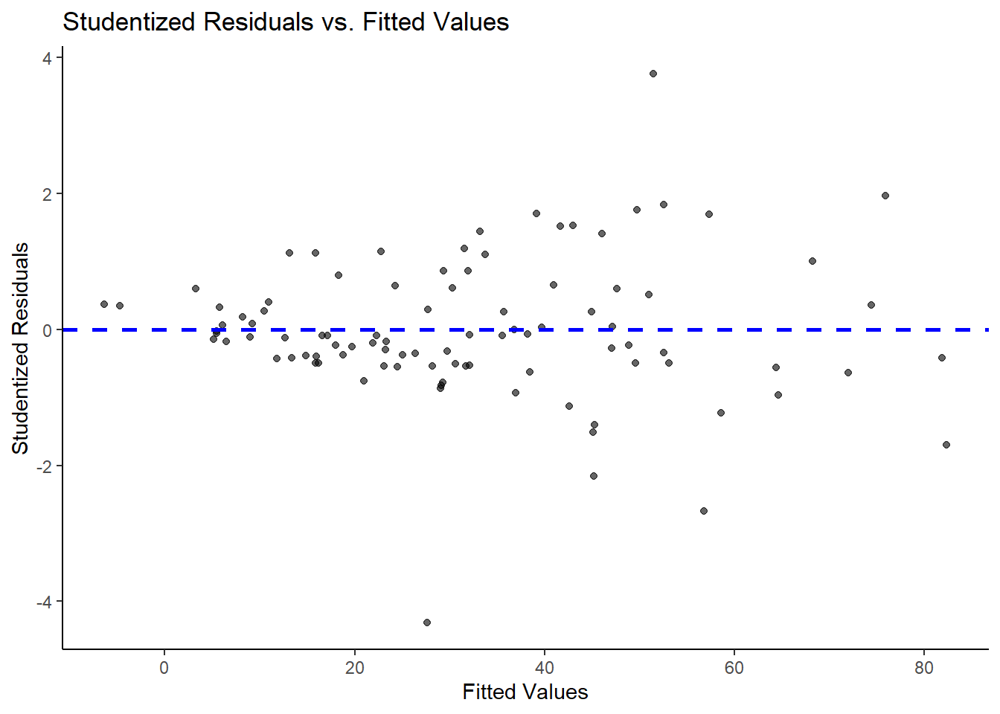

Suggested power transformation: 0.2370356 Code
car::ncvTest(m)Non-constant Variance Score Test
Variance formula: ~ fitted.values
Chisquare = 13.2232, Df = 1, p = 0.00027651Code
gvlma(m)
Call:
lm(formula = fps ~ bac + ta + sex_c, data = data)
Coefficients:
(Intercept) bac ta sex_c
28.7027 -254.5894 0.1231 -15.8550
ASSESSMENT OF THE LINEAR MODEL ASSUMPTIONS
USING THE GLOBAL TEST ON 4 DEGREES-OF-FREEDOM:
Level of Significance = 0.05
Call:
gvlma(x = m)
Value p-value Decision
Global Stat 9.39689053 0.05191 Assumptions acceptable.
Skewness 3.60145982 0.05773 Assumptions acceptable.
Kurtosis 0.30834234 0.57870 Assumptions acceptable.
Link Function 0.00002503 0.99601 Assumptions acceptable.
Heteroscedasticity 5.48706334 0.01916 Assumptions NOT satisfied!9.4 Box Cox Transformation Function
Code
data |>
select(bac, ta, sex_c, fps) |>
psych::describe() |>
select(-c(trimmed, mad, se)) vars n mean sd median min max range skew kurtosis
bac 1 94 0.06 0.04 0.06 0.00 0.14 0.14 -0.09 -1.08
ta 2 94 145.91 104.80 119.00 10.00 445.00 435.00 0.91 0.03
sex_c 3 94 0.01 0.50 0.50 -0.50 0.50 1.00 -0.04 -2.02
fps 4 94 32.19 32.77 19.46 -26.07 136.82 162.89 0.95 0.33We are going to first add a constant so all response values are > 0
Code
data <- data |>
mutate(fps_27 = fps + 27)
m_2 <- lm(fps_27 ~ bac + ta + sex_c, data = data)Next we will pull the best lambda value from a plot of log-likelihood values by lambda power transformations of response variable.
Code
car::boxCox(m_2)
round(car::boxCox(m_2)$x[which.max(car::boxCox(m_2)$y)],2)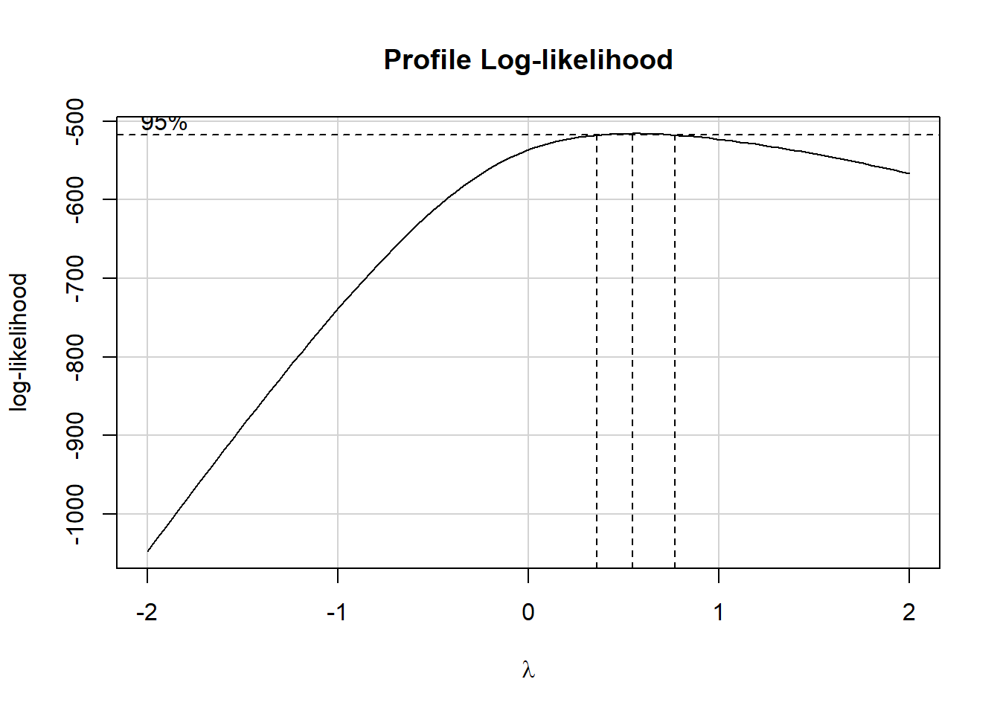
[1] 0.55Lastly, we will use the best lambda value to conduct our power transformation and re-evaluate our model assumptions.
Code
data <- data |>
mutate(fps_bc = car::bcPower(fps_27, .55))
m_3 <- lm(fps_bc ~ bac + ta + sex_c, data = data)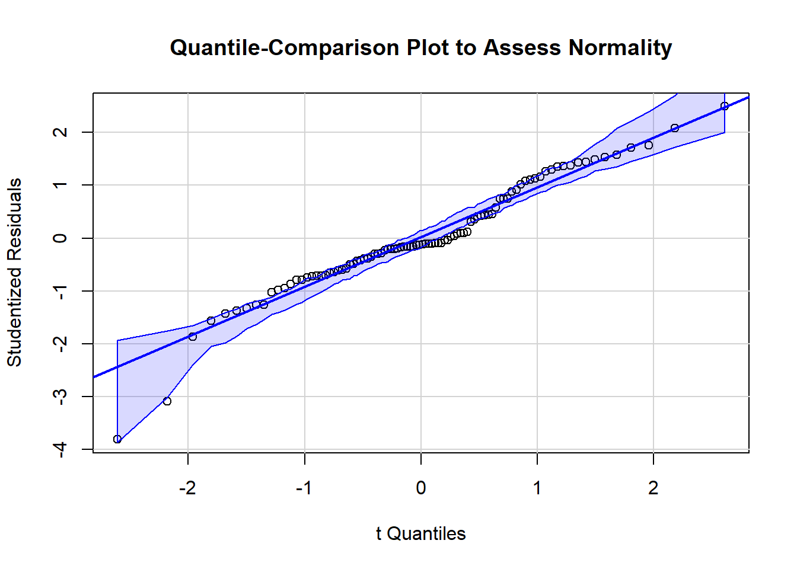
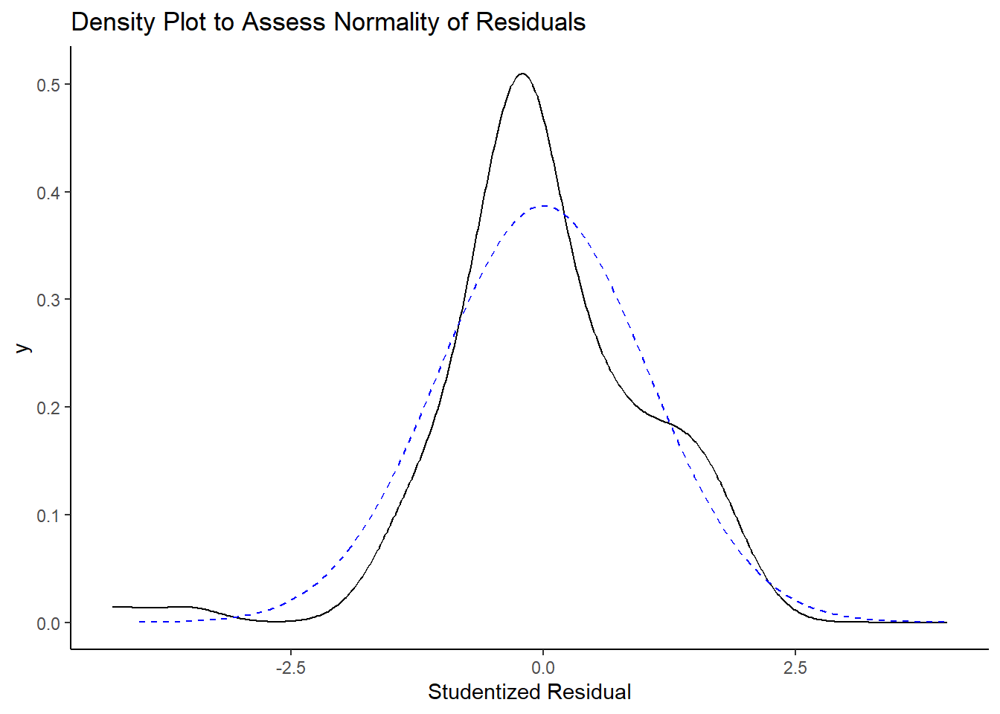
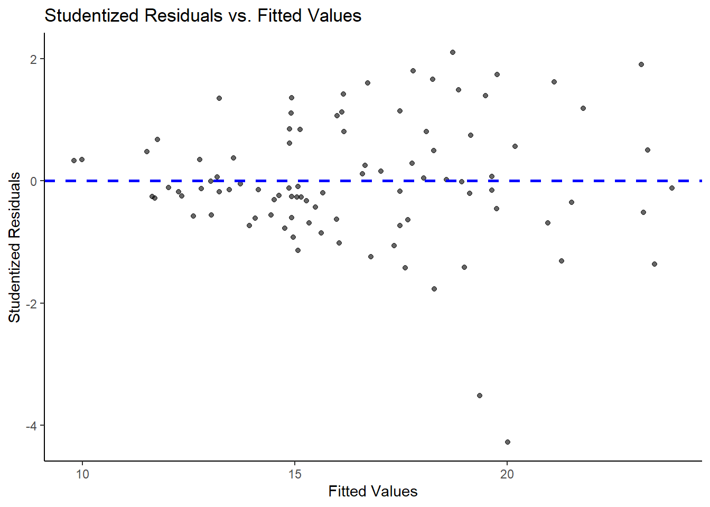
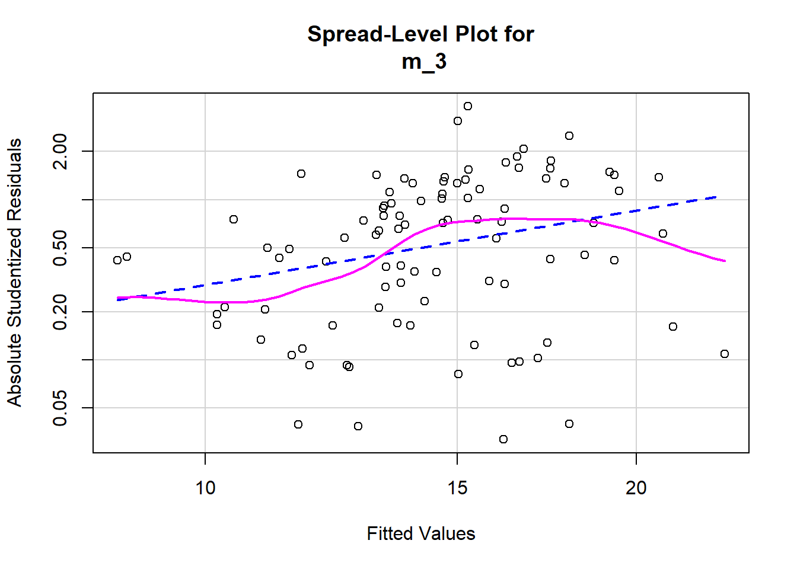
Suggested power transformation: -0.5446104 Code
car::ncvTest(m_3)Non-constant Variance Score Test
Variance formula: ~ fitted.values
Chisquare = 6.005664, Df = 1, p = 0.01426Code
gvlma(m_3)
Call:
lm(formula = fps_bc ~ bac + ta + sex_c, data = data)
Coefficients:
(Intercept) bac ta sex_c
14.21548 -37.52098 0.01793 -2.70290
ASSESSMENT OF THE LINEAR MODEL ASSUMPTIONS
USING THE GLOBAL TEST ON 4 DEGREES-OF-FREEDOM:
Level of Significance = 0.05
Call:
gvlma(x = m_3)
Value p-value Decision
Global Stat 12.759981 0.01251 Assumptions NOT satisfied!
Skewness 1.588199 0.20758 Assumptions acceptable.
Kurtosis 5.520612 0.01879 Assumptions NOT satisfied!
Link Function 0.004907 0.94416 Assumptions acceptable.
Heteroscedasticity 5.646263 0.01749 Assumptions NOT satisfied!Transformations often don’t help!
Code
m_3 |>
broom::tidy()# A tibble: 4 × 5
term estimate std.error statistic p.value
<chr> <dbl> <dbl> <dbl> <dbl>
1 (Intercept) 14.2 1.03 13.8 6.26e-24
2 bac -37.5 11.5 -3.25 1.62e- 3
3 ta 0.0179 0.00436 4.11 8.62e- 5
4 sex_c -2.70 0.910 -2.97 3.82e- 3White (1980) Heteroscedasticity-corrected SEs and Tests
Code
corrected_ses <- sqrt(diag(hccm(m)))
broom::tidy(m) |>
select(term, estimate) |>
add_column(std.error = corrected_ses) |>
mutate(statistic = estimate/std.error,
p.value = 2*(pt(abs(statistic), df=m_2$df.residual, lower.tail=FALSE)))# A tibble: 4 × 5
term estimate std.error statistic p.value
<chr> <dbl> <dbl> <dbl> <dbl>
1 (Intercept) 28.7 6.91 4.15 0.0000744
2 bac -255. 71.3 -3.57 0.000575
3 ta 0.123 0.0320 3.85 0.000224
4 sex_c -15.9 5.87 -2.70 0.00826 Maybe better choicer was untransformed Y (original model) with corrected SEs?
Maybe the problem wasn’t bad enough to do anything?
9.5 Transformations: Dealing with Non-linearity
Power transformations can make simple monotone relationships more linear (Fig A). Polynomial regression (or other transformations, e.g. logit) is often needed for more complex relationships (Figs, B & C).
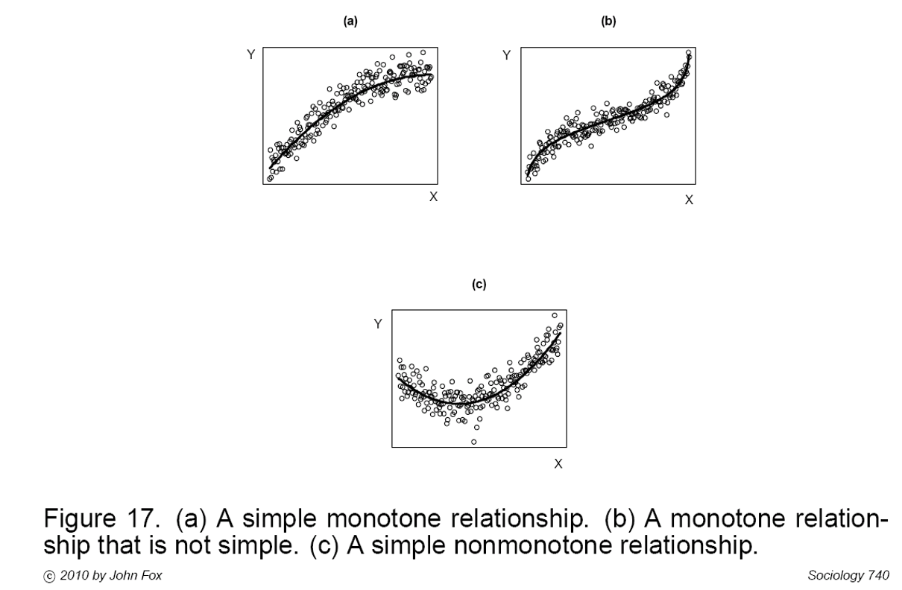
9.6 Transformations: Mosteller and Tukey’s bulging rule
Simple monotone relationships can be corrected by transforming \(X\) or \(Y\).
\(X\) is typical if only one \(XY\) relationship is problematic.
If all \(X\)s have similar non-linear relationship, transform \(Y\).
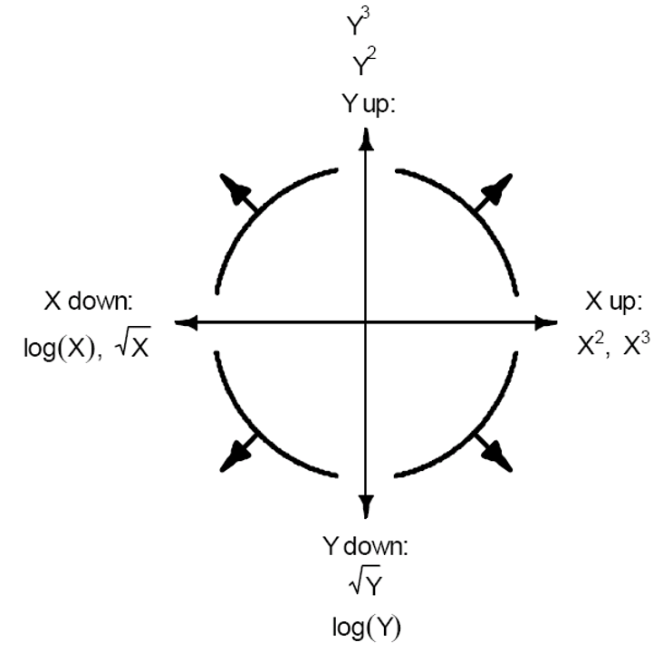
Question: What 2 transformations would make this relationship linear?
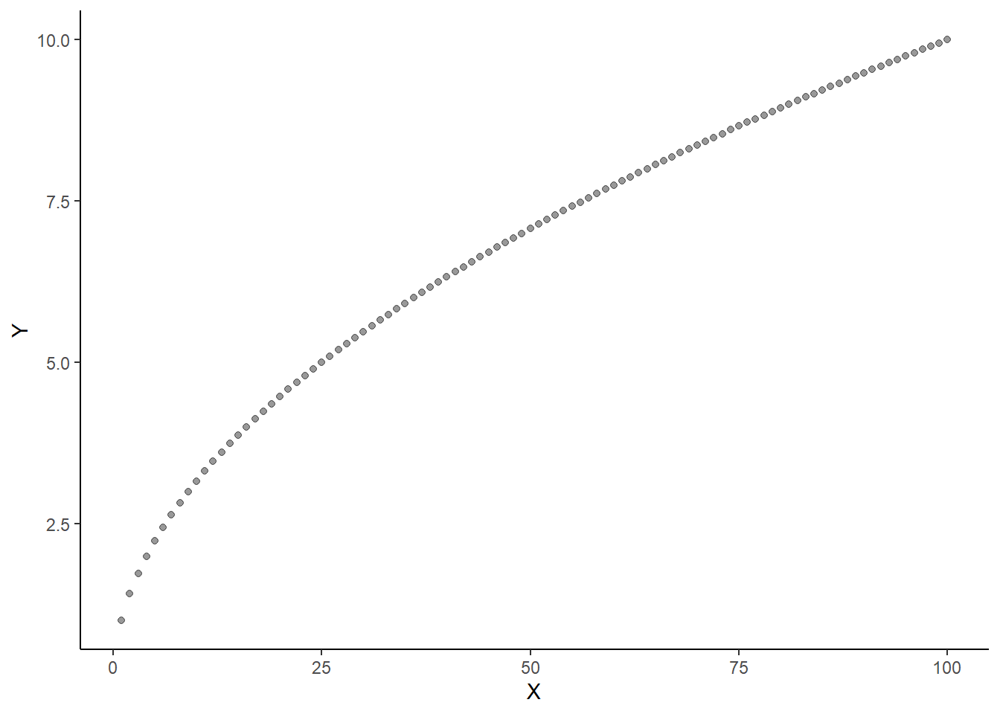
Move \(X\) down the ladder (e.g., \(X^.5\))
Code
data_nonlinear |>
ggplot(aes(x = sqrt(X), y = Y)) +
geom_point(alpha = .4)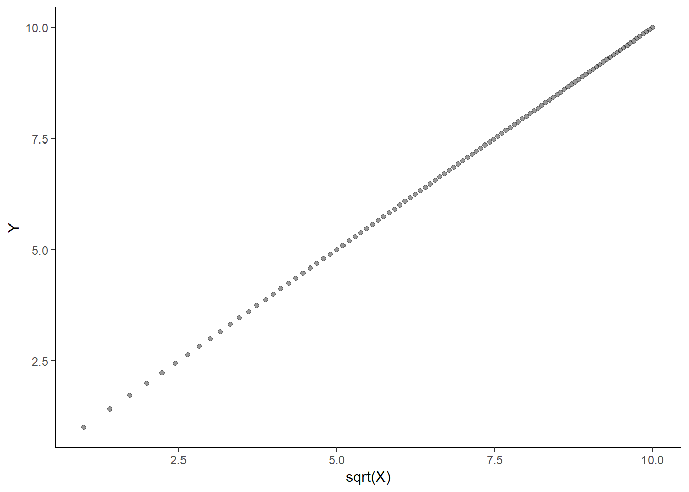
Move \(Y\) up the ladder (e.g., \(Y^2\))
Code
data_nonlinear |>
ggplot(aes(x = X, y = Y^2)) +
geom_point(alpha = .4)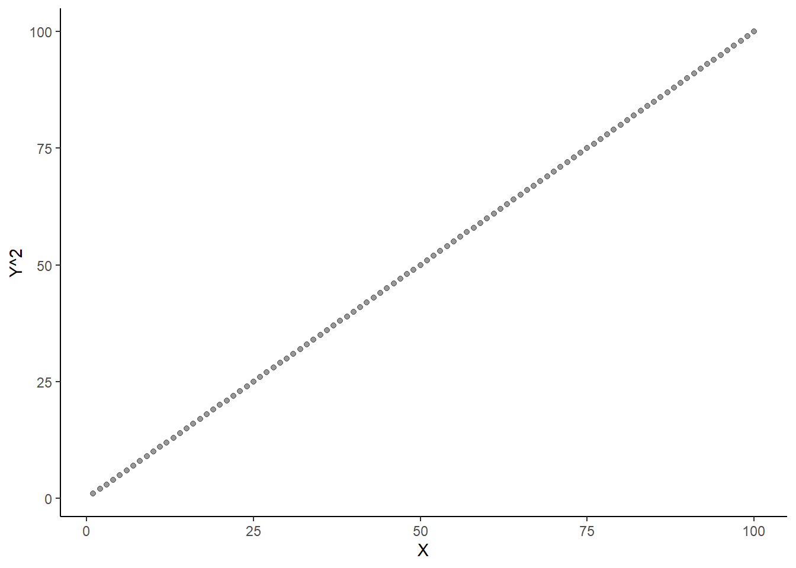
9.7 General Transformations
In some fields, certain power transformations (sqrt, log, inverse) are common.
If we have a choice between transformations that perform roughly equally well, we may prefer one transformation to another because of interpretability:
- The log transformation has a convenient multiplicative interpretation (e.g., increasing log2 (X) by 1 doubles X; increasing log10 (X) by 1 multiples X by 10).
Transformations are a big source of research dfs. Should be pre-registered. You may know what your DV typically needs from prior data. Worst case, report with and without transformations and justify.
9.8 5K Race Times
Code
data_5k <- read_csv(here::here(path_data, "9_transformations_5k.csv"),
show_col_types = FALSE) |>
glimpse()Rows: 80
Columns: 4
$ subid <chr> "01", "02", "03", "04", "05", "06", "07", "08", "09", "10", "11"…
$ time <dbl> 24.91, 21.82, 21.54, 23.03, 25.35, 22.84, 30.16, 27.00, 16.42, 2…
$ age <dbl> 29, 25, 27, 25, 37, 31, 43, 44, 46, 53, 58, 30, 27, 36, 32, 45, …
$ miles <dbl> 24.99984, 30.80905, 52.04042, 66.20958, 26.60005, 48.21255, 12.3…Code
m_5k <- lm(time ~ age + miles, data = data_5k)
broom::tidy(m_5k)# A tibble: 3 × 5
term estimate std.error statistic p.value
<chr> <dbl> <dbl> <dbl> <dbl>
1 (Intercept) 25.0 1.80 13.9 1.07e-22
2 age 0.172 0.0333 5.17 1.77e- 6
3 miles -0.210 0.0246 -8.53 9.54e-13Code
model_assumptions(m_5k, Type = "normal")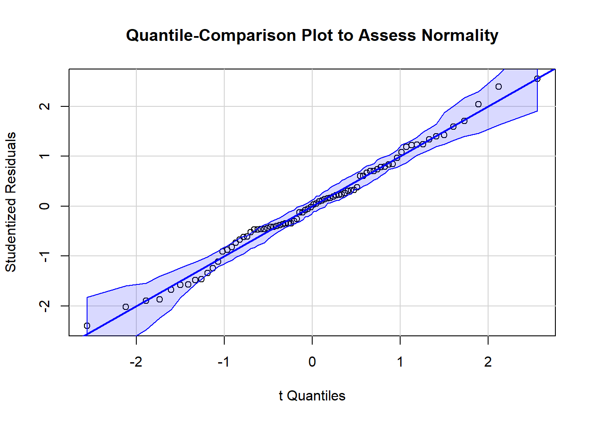
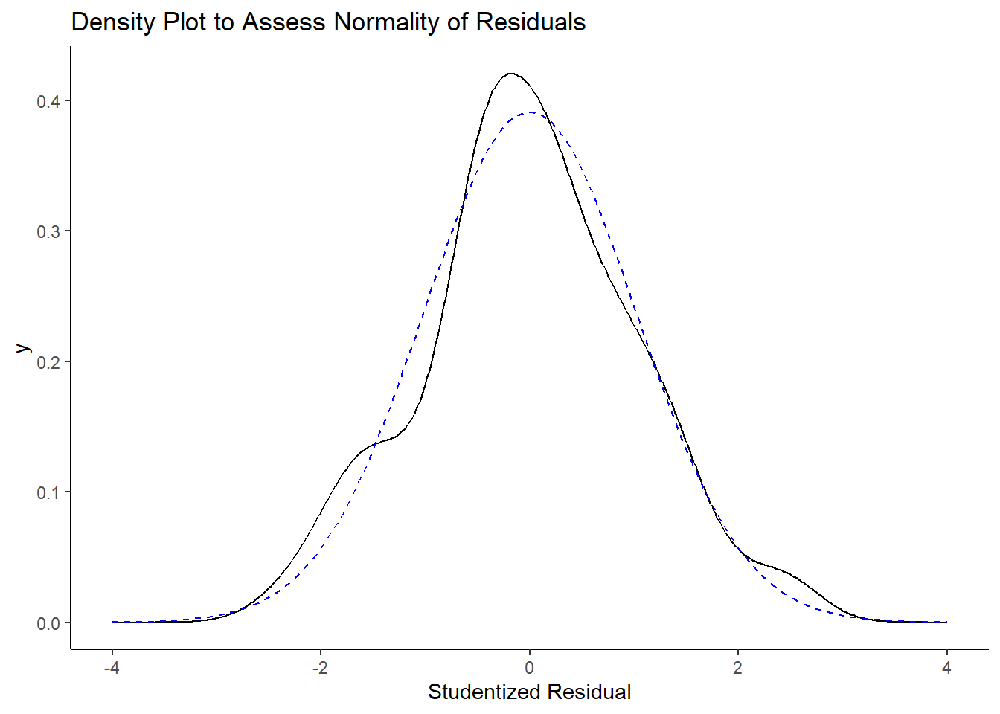
Code
model_assumptions(m_5k, Type = "constant")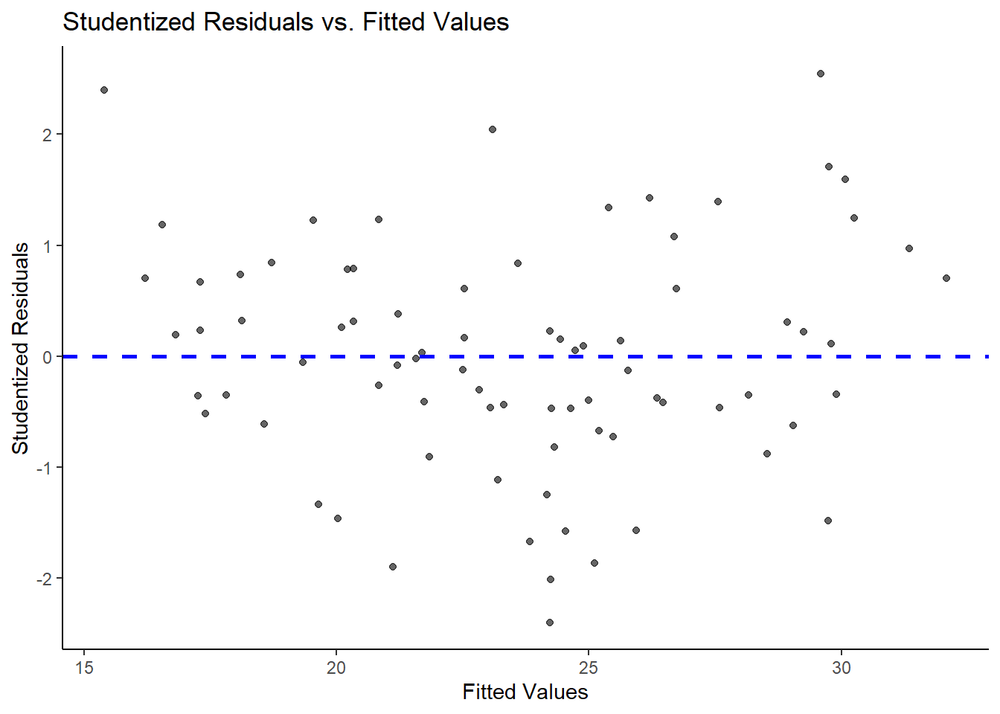
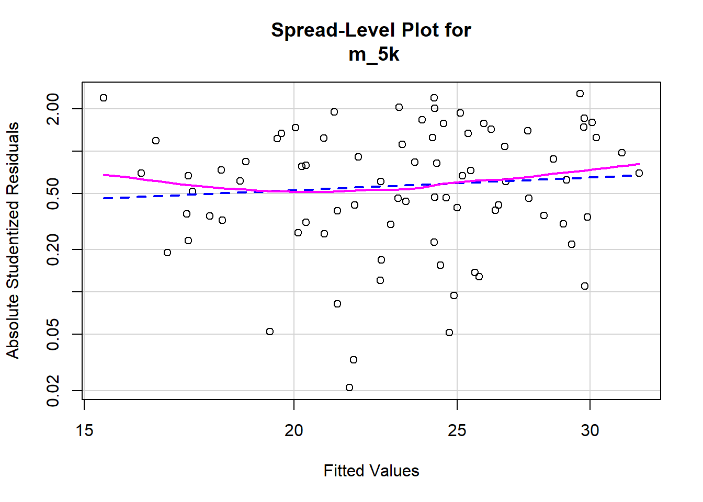
Suggested power transformation: 0.4894249 Code
car::ncvTest(m_5k)Non-constant Variance Score Test
Variance formula: ~ fitted.values
Chisquare = 0.8077899, Df = 1, p = 0.36877Code
model_assumptions(m_5k, Type='linear')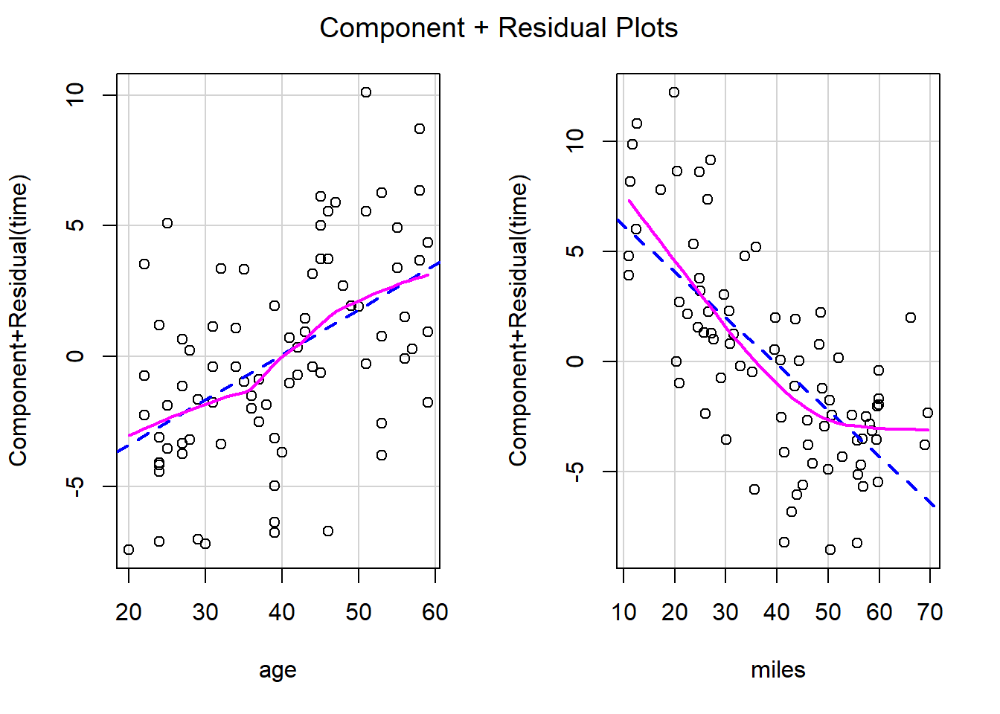
Code
gvlma(m_5k)
Call:
lm(formula = time ~ age + miles, data = data_5k)
Coefficients:
(Intercept) age miles
24.9804 0.1724 -0.2097
ASSESSMENT OF THE LINEAR MODEL ASSUMPTIONS
USING THE GLOBAL TEST ON 4 DEGREES-OF-FREEDOM:
Level of Significance = 0.05
Call:
gvlma(x = m_5k)
Value p-value Decision
Global Stat 13.01039 0.0112252 Assumptions NOT satisfied!
Skewness 0.01435 0.9046389 Assumptions acceptable.
Kurtosis 0.07603 0.7827462 Assumptions acceptable.
Link Function 12.82570 0.0003419 Assumptions NOT satisfied!
Heteroscedasticity 0.09430 0.7587759 Assumptions acceptable.Let’s try transforming miles using log2(), a binary logarithm (base 2).
Code
data_5k <- data_5k |>
mutate(log_miles = log2(miles))
m_5k_tran <- lm(time ~ age + log_miles, data = data_5k)
broom::tidy(m_5k_tran)# A tibble: 3 × 5
term estimate std.error statistic p.value
<chr> <dbl> <dbl> <dbl> <dbl>
1 (Intercept) 42.5 3.25 13.1 2.88e-21
2 age 0.170 0.0320 5.32 9.97e- 7
3 log_miles -4.98 0.538 -9.26 3.73e-14Code
model_assumptions(m_5k_tran, Type='linear')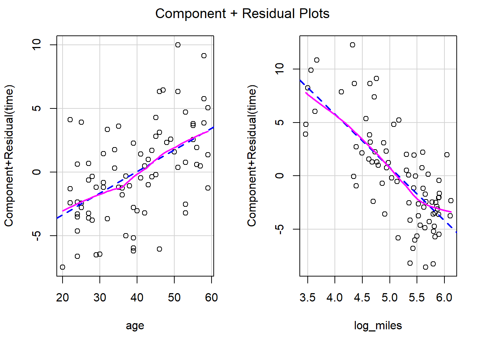
Code
gvlma(m_5k_tran)
Call:
lm(formula = time ~ age + log_miles, data = data_5k)
Coefficients:
(Intercept) age log_miles
42.519 0.170 -4.983
ASSESSMENT OF THE LINEAR MODEL ASSUMPTIONS
USING THE GLOBAL TEST ON 4 DEGREES-OF-FREEDOM:
Level of Significance = 0.05
Call:
gvlma(x = m_5k_tran)
Value p-value Decision
Global Stat 1.83180 0.7667 Assumptions acceptable.
Skewness 0.15584 0.6930 Assumptions acceptable.
Kurtosis 0.06402 0.8003 Assumptions acceptable.
Link Function 1.58986 0.2073 Assumptions acceptable.
Heteroscedasticity 0.02209 0.8819 Assumptions acceptable.9.9 Displaying Transformed Results With Fake Data
Code
data_fake <- tibble(x = 3 * rchisq(200, df=3),
x_sr = sqrt(x),
y = 3 * x_sr + rnorm(200,mean=0,sd = 1))
m_raw = lm(y ~ x, data = data_fake)
broom::tidy(m_raw)# A tibble: 2 × 5
term estimate std.error statistic p.value
<chr> <dbl> <dbl> <dbl> <dbl>
1 (Intercept) 3.67 0.148 24.9 7.86e-63
2 x 0.519 0.0147 35.3 2.66e-87Code
data_fake |>
ggplot(aes(x = x, y = y)) +
geom_point(alpha = .4) +
geom_abline(intercept = coef(m_raw)[1], slope = coef(m_raw)[2], color = "red")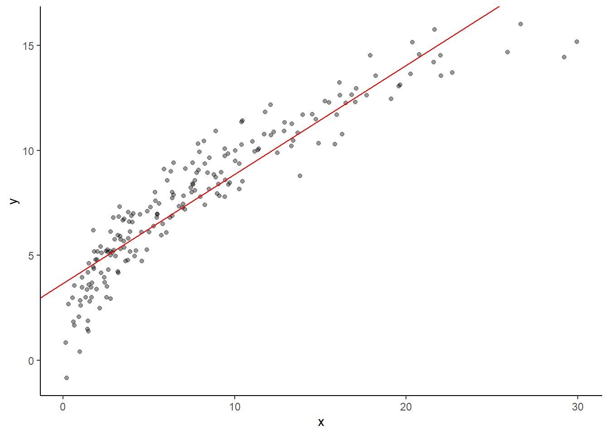
Code
m_sr = lm(y ~ x_sr, data = data_fake)
broom::tidy(m_sr)# A tibble: 2 × 5
term estimate std.error statistic p.value
<chr> <dbl> <dbl> <dbl> <dbl>
1 (Intercept) -0.151 0.175 -0.863 3.89e- 1
2 x_sr 3.06 0.0624 49.1 9.18e-113Code
data_fake |>
ggplot(aes(x = x_sr, y = y)) +
geom_point(alpha = .4) +
geom_abline(intercept = coef(m_sr)[1], slope = coef(m_sr)[2], color = "red")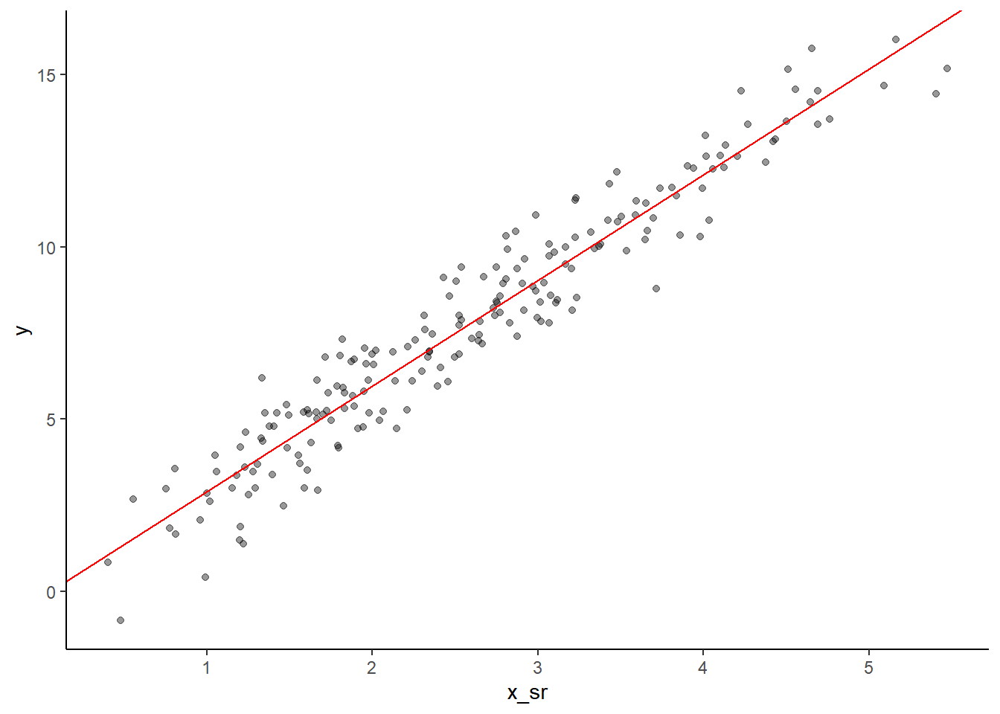
You can display results from linear model but provide scale for raw \(X\) instead of Sqrt(\(X\)) or in addition to Sqrt(\(X\)) on another axis.
Code
preds <- tibble(x_sr = seq(min(data_fake$x_sr),max(data_fake$x_sr), by=.01))
y_pred = predict(m_sr, newdata = preds)
ggplot() +
geom_point(aes(x = data_fake$x_sr, y = data_fake$y), alpha = .4) +
geom_line(aes(x = preds$x_sr, y = y_pred)) +
ylab("Y") +
scale_x_continuous(name = "SQRT(X)", sec.axis = sec_axis(~.^2, name = "Raw X"))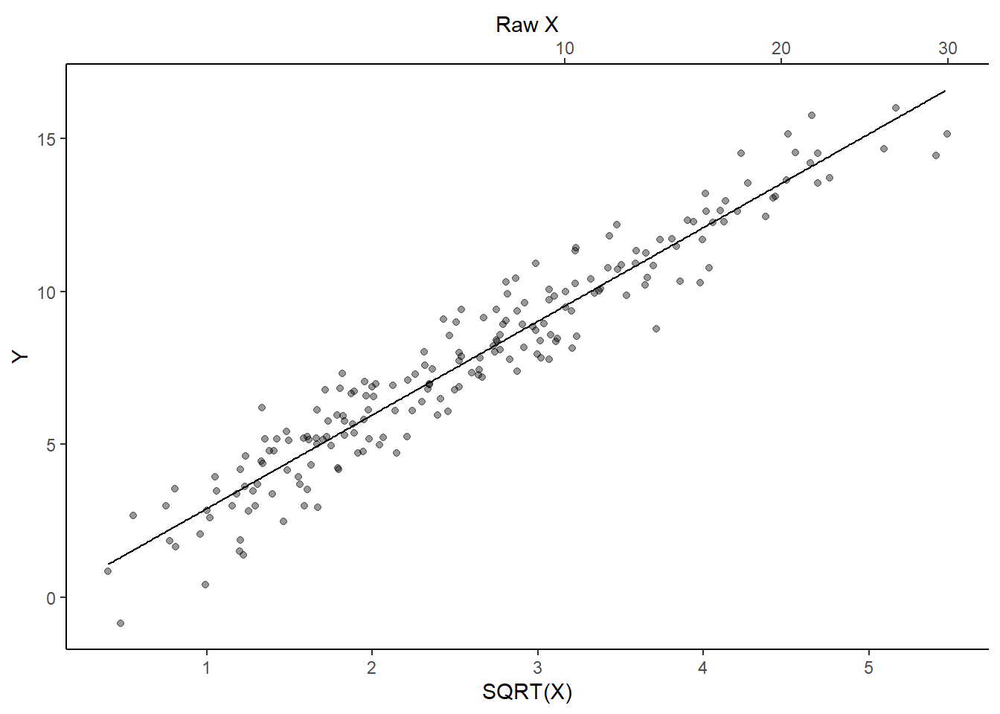
You can display results from linear model in Raw \(X\) Units and use predict() to get the \(Y\)s based on transformed \(X\).
Code
preds <- tibble(x_sr = sqrt(seq(min(data_fake$x),max(data_fake$x), by=.1)))
y_pred = predict(m_sr, newdata = preds)
ggplot() +
geom_point(aes(x = data_fake$x, y = data_fake$y), alpha = .4) +
geom_line(aes(x = seq(min(data_fake$x),max(data_fake$x), by=.1), y = y_pred)) +
ylab("Y") +
xlab("X")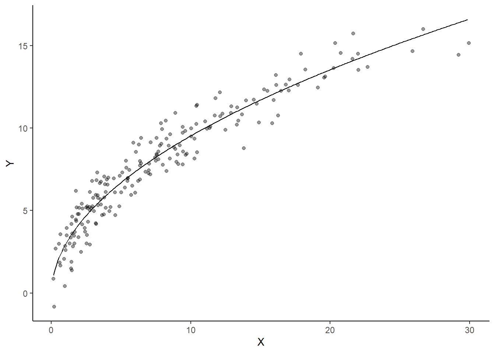